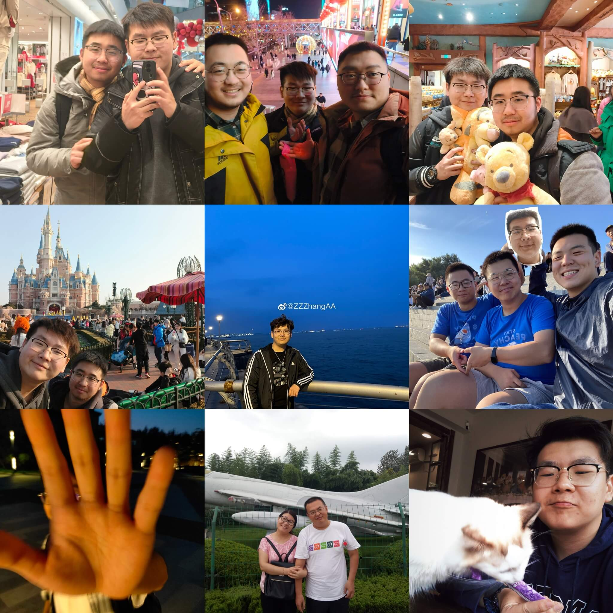
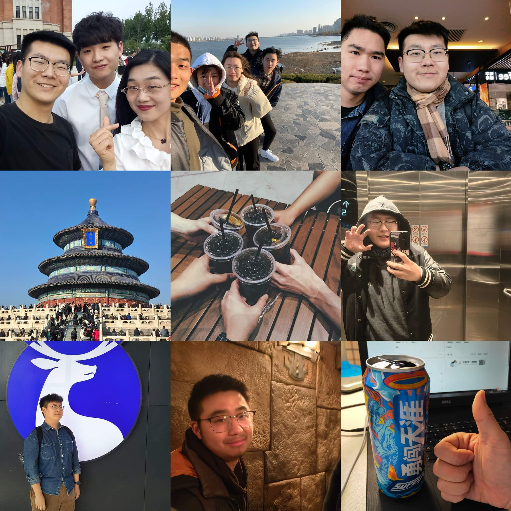

Jiaxu (Jacob) Zhang | 张家绪Hi! I'm Jiaxu Zhang pursing a master's degree in Sun Yat-sen University, Shenzhen, China. I'm with the Lab of Intelligent Photoelectric Sensing under the supervision of Liang Wang. My bachelor's supervisor is Xiaojian Ma. I will graduate in June 2026. You can call me Jacob. lol Email: zhangjx283@mail2.sysu.edu.cn |
|||||||||||||
|---|---|---|---|---|---|---|---|---|---|---|---|---|---|
News[2024/03/20] I will give an oral presentation in 7th Global Intelligent Industry Conference. [2024/03/07] One paper has been accepted by IEEE Sensors Journal. [2024/01/26] One paper has been accepted by IEEE JSTARS. [2023/03/17] One paper has been accepted by IEEE TIM. Educational Experiences· 2023/09-2026/06 | M.S. Sun Yat-sen University, Shenzhen, China - Major: Information and Communication Engineering · 2019/09-2023/06 | B.S. Northeast Forestry University, Harbin, China - Major: Information and Computational Sciences (Computational Mathematics) - GPA: 4.26/5.00, Avg Score: 94.57/100.00 - Ranking: 3/58 (Top 5.17%) Research InterestsMy recent research interests include: · Belief Function theorey (Evidence theory, Dempster Shafer's theory) · molti-modal learning, information fusion, multi-sensor fusion · information geometry · and their applications in real-world problems, such as (but not limited to) in remote sensing and railway sciences. Papers
Social Experiences· 2023/02-2023/09 | Computer Vision Engineer-Intern, China Academy of Railway Sciences · 2020/04-2020/05 | "Stars Project"-Intern (direction of operating officer), Tencent CSIG Awards· 2023 | First-class freshman scholarship - SYSU · 2023 | Outstanding graduates - NEFU · 2021 | Finalist award - Mathematical Contest In Modeling & Interdisciplinary Contest In Modeling (MCM/ICM, Top 2%) · 2021 | National second-class award - China Undergraduate Mathematical Contest in Modeling (CUMCU) · 2021 | Principal-class scholarship - NEFU · 2020 | China National scholarship (Highest Honor for undergraduates in China, Top 1/122) Life & People And to be continued... |
|||||||||||||
| Supported by Github.io All rights reserved. 2023-2024 | |||||||||||||